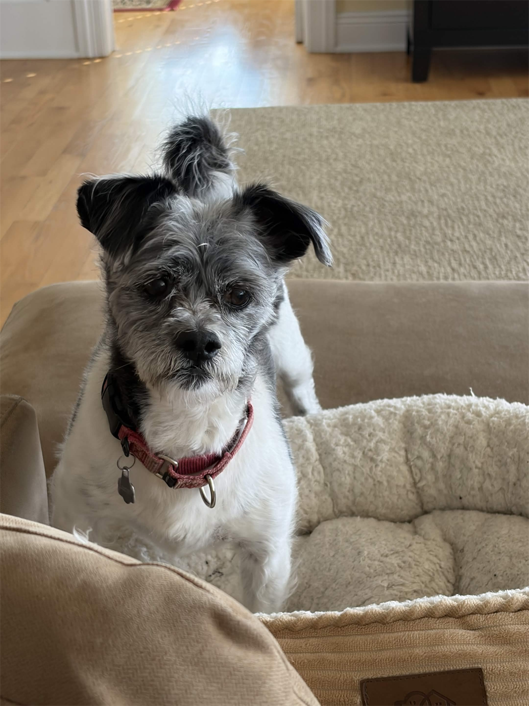
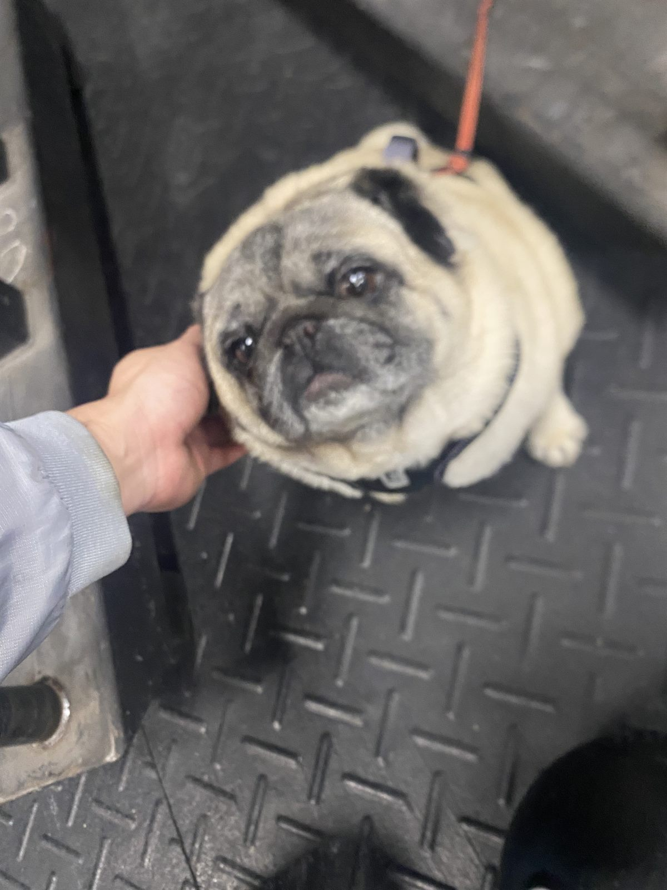
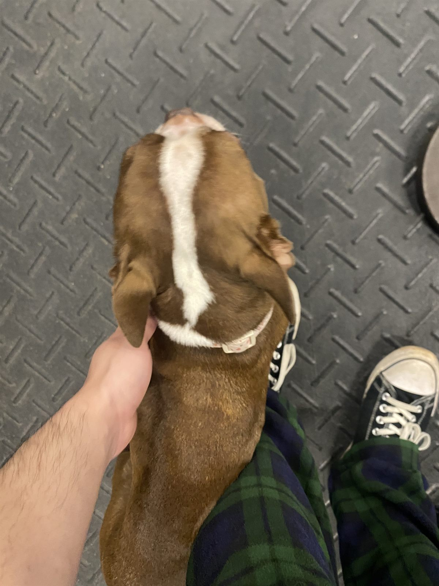

Lifter Association Editorial Desk
About The Project And Team
Lifter Association is a small editorial project about bodybuilding as a gym practice,
a daily routine, and a community of people learning around each other.
Marcos Sanchez serves as the site editor, shaping the visual direction, writing, page
design, and bodybuilding coverage. The project began with a simple question: what would
happen if the ordinary parts of the gym were treated as worth documenting? A bench, a
scale, a leaderboard, and even a closed juice bar can all become part of a larger story
about discipline and consistency.
Contributor Profiles

Marcos Sanchez
Site Editor
Marcos connects the project genres: reviews, pictorial documentation, map profiles,
and personal training narrative. His goal is to make bodybuilding feel understandable
to newer lifters while still sounding like it came from someone who actually spends
time in the gym.

Lucky Jacobson
Training Writer
Lucky represents the practical gym-floor voice of the site, focused on equipment,
setup, repeatable form, and the small details that help new lifters feel less lost.

Dante Walterson
Nutrition And Cutting Editor
Dante covers the off-site side of bodybuilding: groceries, snacks, recovery, and the
choices that make training sustainable after the workout ends.

Ivy Park
Gym Culture Contributor
Ivy focuses on the atmosphere of the gym: leaderboards, funny moments, familiar
faces, and the way a training space becomes easier to return to when it feels social.
Project History
The final project expands the prototype by revising the writing, reducing image repetition,
strengthening the footer and links, and adding a visual essay.
Started As A Personal Training Log
Lifter Association began as a small personal blog used to track workouts, favorite
gym stations, and the small details that made some sessions go better than others.
Early posts were mostly short notes about bench setups, rack availability, and
progress check-ins.
Turned Into A Bodybuilding Blog
As the writing became more regular, the blog shifted away from private notes and
toward bodybuilding coverage. Posts started focusing more on exercise selection,
cutting phases, food choices, and the habits that made training sustainable.
Added Reviews And Gym Observations
Once the blog had a clearer identity, it began adding reviews of everyday gym
equipment and shorter observations about gym culture. Barbells, cardio machines,
leaderboards, and recurring gym habits became part of the site's regular material.
Expanded Into Visual And Location-Based Posts
After building up more written material, the blog started organizing posts around
images, gym spaces, and workout flow. That shift made the site easier to move
through while also showing what bodybuilding looks like in practice.
Became A Full Editorial Bodybuilding Site
In its current form, Lifter Association brings together reviews, pictorial
documentation, gym mapping, contributor-style writing, and a visual essay. What
started as a personal log has grown into a bodybuilding site with a more polished
blog format and a stronger voice.